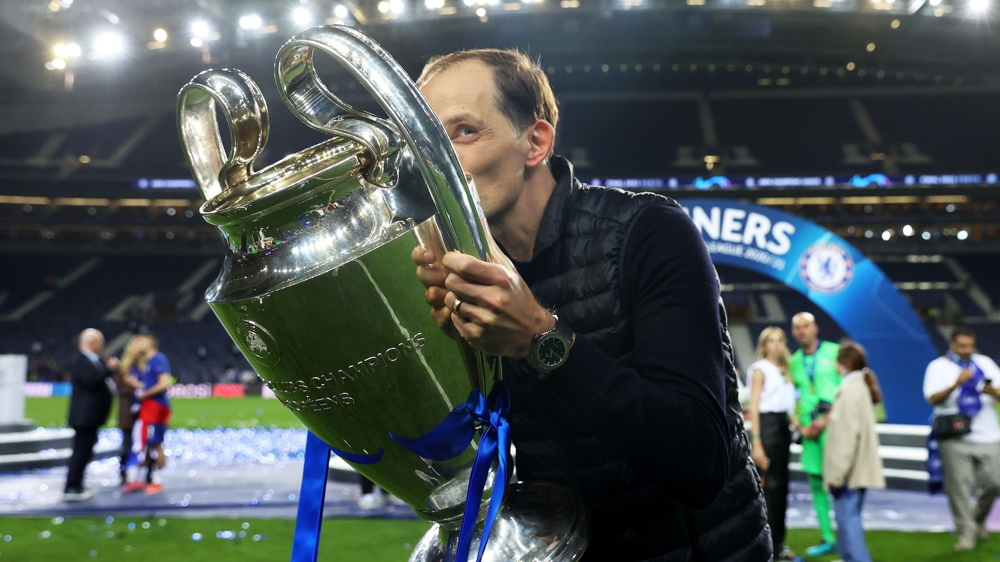

Tuchel
May 29, 2021
Thomas Tuchel Comments
This is unbelievable. To share it with everybody is unbelievable. I don’t know what to feel. I was so grateful to arrive a second time, but I had a feeling this was different. Somehow you could feel it, every day coming closer. The players were determined to win this, we wanted to be the stone in City’s shoe.'